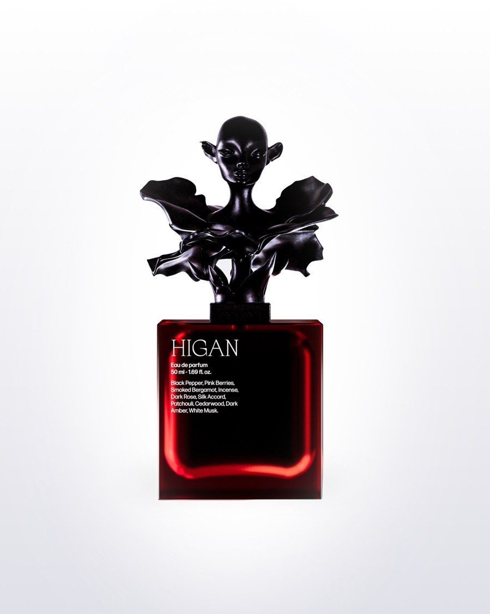

Menu
Version 4 · validée
Higan
/
From the Other Shore
Studio Rive · tour de retours
2 sur 3
prévus au devis
↳
Film
Plans
Versions précédentes

Validée par Mia le 25 novembre à 10:42
La version 4 est validée.
Le studio a été prévenu. Vous recevrez les fichiers 16:9 et 9:16 en 4K le 26 novembre, par e-mail et sur cette page.
Revoir le film
Télécharger le récapitulatif
← Tous les écrans
Version validée
Cliquez sur un bouton, ou appuyez sur H pour voir les zones cliquables